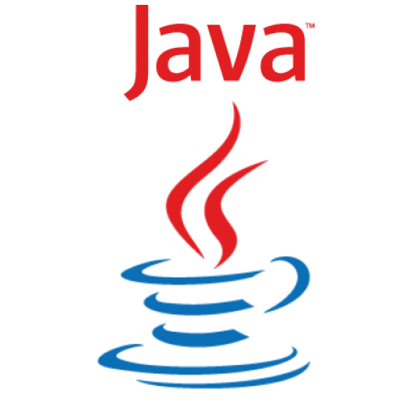
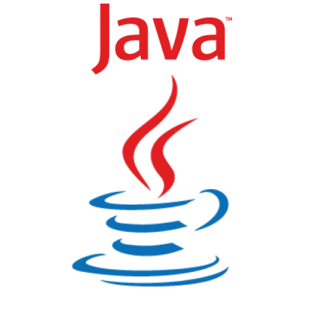
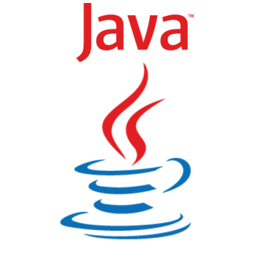

I have a deep passion for programming as it allows me to unleash my creativity and bring new ideas to life.
Over the years, my expertise has grown to encompass both frontend and
backend development, enabling me to work on
large-scale core projects that have a real-world impact.
My primary focus includes technologies like HTML, CSS, JavaScript, MongoDB, TypeScript, Tailwind, Angular, and Java EE,
while also having experience with frameworks like Bootstrap and Vue.
Beyond development, I’ve also worked as a network specialist in the IT industry, gaining valuable insights into
system infrastructure. However, my true joy lies in coding, where I explore endless possibilities, collaborate with
talented teams, and continually evolve my skills to tackle new challenges.
